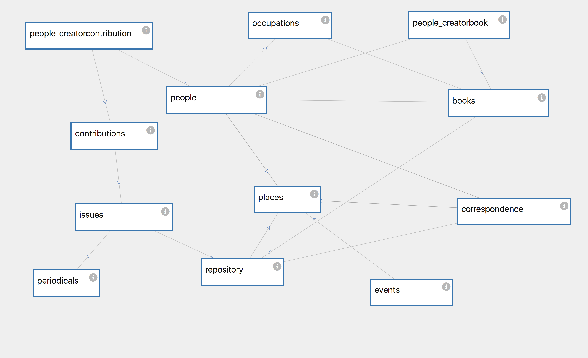

.
.Here is an interactive view of my database design, created with Davila.js. This tool also allows you to see the details of each layer in a drop-down feature .
More details about my database design and how I built it.
Details, details, details...